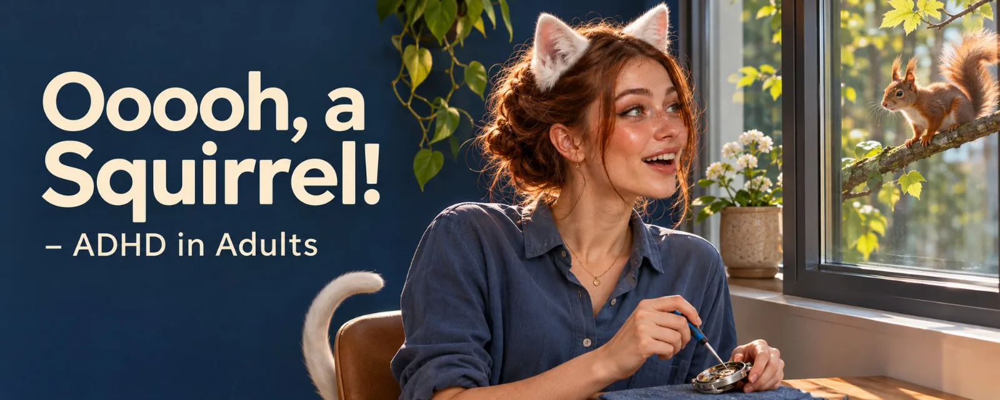
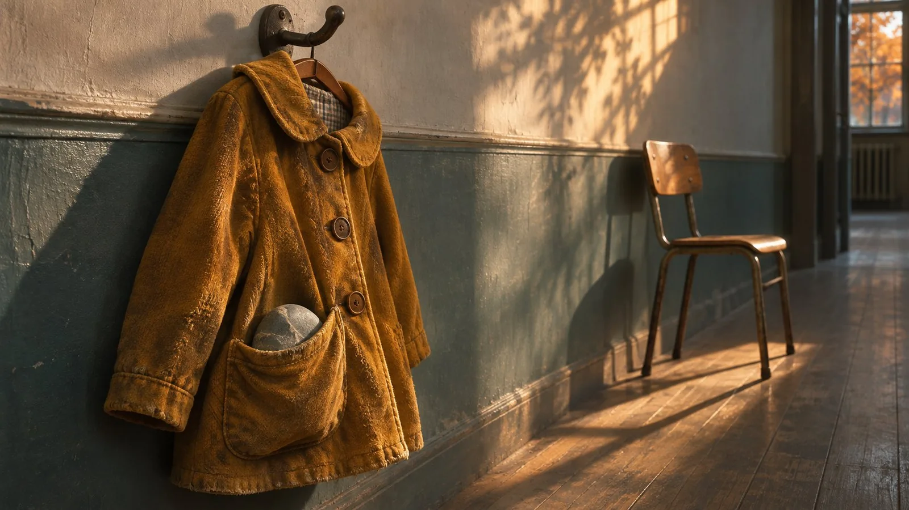

Ooooh, a Squirrel! - ADHD in Adults
The dishwasher is an underrated opponent. It has no teeth, no claws and only one door, and still it beat me on some evenings. Not narrowly. Decisively.
I stood in front of it, door open, lower rack half pulled out, a mug in my hand. And nothing happened. Not because I didn't know where the mug goes. Because my head had decided that loading a dishwasher is a task in eleven steps, and eleven steps were too many today. The mug and I looked at each other for a while. The mug won. So I put it on the counter, next to the others already waiting there like a small, very patient army, and walked away.
And I'm the same person who used to game, watch a video and write code, all at once. The code ran, and I could have retold the video afterwards. Multitasking wasn't a talent for me. It was where I lived.
For a long time I thought it was age. Or laziness. Or just me, which was the most comfortable explanation, because then you don't have to do anything about it. It was ADHD. I've known for a year. Before that, I simply lived like this.
The Lively Child

There used to be a word for children like me that sounded friendlier than it was meant: lively. What it meant was mouthy, fidgety, never still, always one question too many and always one sentence too early.
Today a child like that might eventually end up in front of a pediatrician who asks the right questions. Back then nobody thought of a diagnosis, let alone Ritalin. Back then there was the belt. The hand. And other "tools" meant to finally make the "terrible" child sit still. They called it upbringing.
It didn't work. You can beat a lot of things into a child, but not different wiring. The brain is remarkably stubborn about that. What sticks is something else: the sentence that you are difficult. Hear it often enough and at some point you believe it yourself, and you carry it around like a stone in your coat pocket, long after you've forgotten how it got there.
What also stayed were the restlessness and the hyperfocus. When something interests me, I dive in, and not knee-deep. Then I want to know everything. How it works, why it works, who invented it and what happens if you assemble it backwards. The world gets quieter, food becomes optional, and the time of day becomes a rumor spread by other people.
That is exactly what made me good at my job. It's about problems nobody has solved yet and solutions nobody else comes up with. Where others saw a wall, I saw seven doors, and usually one of them was open. The other six were interesting enough to peek into anyway. 🔧
Normal, Just Sorted Differently
I never thought of myself as ill. I thought I was normal, just with a few abilities that made me better at the technical side and worse at the social one. A fair trade, I thought. The universe had handed me a pretty good toolbox and forgotten the etiquette book. It was probably still somewhere in the delivery van.
I always had my troubles with people. Building trust and keeping friendships never happened on the side for me. Add the fear of loss and the feeling that many people simply don't understand me, because I don't always speak their language. Not their German or their English, but the language underneath. The one where you know when a sentence is over and when it's better to say nothing. I speak it fairly well by now. With an accent.
I thought that came with the package. And as long as life fit my head, it worked.
When Life Stops Fitting
Over the years it got harder to stay on the ball. What used to come easily suddenly cost energy. I was overwhelmed more often, lost the thread, forgot things. Not the big ones. The small ones that pile up until they're big. Small things like to do that. They're patient, and there are a lot of them.
On top of that, my job changed. Problem solving turned more and more into management. Meetings, coordination, interruptions, leading people, finishing things that aren't exciting, just due. Pretty much the exact list of what an ADHD brain struggles with, neatly filed and with a deadline.
Many people with ADHD compensate for decades. They build detours, tricks and systems, a whole scaffolding of alarms, lists and sticky notes, and it holds until the demands grow and the scaffolding can't take the weight anymore. Then it doesn't all collapse at once. It crumbles, politely and thoroughly. First the dishwasher, then the emails, then your patience with yourself.
And at some point something else crumbled that I didn't connect with any of this for a long time: my emotions got harder and harder to steer. I'd tip from perfectly normal into deep sadness, from there into laughter and, the moment something didn't work, straight into rage. Not the kind of anger that slowly comes to a boil, the kind that is simply there, as if someone had flipped a switch. Weather in my head, and the forecast had quit. 🌦️
Especially in people over forty, this phase often gets diagnosed as depression. Sometimes that's right. But if there's ADHD underneath and nobody looks, you're patching the roof while the basement floods.
36 out of 41
At some point I took an online test. Not as a diagnosis, just to get a feeling for whether I was heading in the right direction. A common one is the WHO's short screener for adults, the six-question ASRS. More extensive are the self-tests from ADxS.org, which also ask about anxiety, depression and autism, because all of these love to look alike.
My result: 36 out of 41 symptoms. Plus a suspicion of anxiety disorder, RSD and autism.
I sat there and thought: "Great. Bingo." Although with bingo you usually win something. 🎯
An online test isn't a diagnosis. It's a compass. It doesn't tell you where you are, but which way to keep walking. Mine pointed pretty clearly in one direction.
"Stop Talking Nonsense"
Back then I still had a partner. I told her, and her answer was: "ADHD? Oh, really? Valerie, stop talking nonsense..."
I think that sentence comes up more often than you'd expect. When you tell someone who has known you for a long time that something in your head might work differently, they don't hear: "I found an explanation." They hear: "The picture you have of me was incomplete." Some partners even feel almost betrayed, as if you'd handed them the wrong package insert for years.
Yet nothing about me had changed, only the explanation. I was the same person as the day before, except that for the first time I was holding a user manual. After a good forty years. It must have been in the same delivery van as the etiquette book. And I wanted to be allowed to read it without apologizing for it.
The Long Road to an Appointment
Getting treated isn't easy. Lots of people have ADHD, and many walk around with it for years or decades without knowing. In Germany alone, estimates put the number of adults living with ADHD but without a diagnosis at around two million. Adult diagnoses have nearly tripled over the last ten years, the number of specialists hasn't. Specialists, sadly, don't triple on their own. The result: full practices, long waiting lists. Waiting a year for a diagnostic appointment isn't unusual, which has a very special punchline for people who find ten minutes in a waiting room too long.
If you want your health insurance to pay for it, you have a long road ahead. I paid for my diagnosis myself. That was the fastest way, and at the end I had a piece of paper that got me my medication. It isn't cheap, self-payers usually end up at several hundred euros, and I know not everyone can do that. But if you can and don't want to wait, you should know this path exists. It's not illegal, by the way, just sadly common practice: if you pay yourself, you get to see a doctor sooner and hold your diagnosis in your hand sooner. The system has a soft spot for bills that get paid right away.
What Happens If You Do Nothing
Untreated ADHD isn't just "a bit chaotic". Around 80 percent of people with ADHD develop at least one other mental illness, half of them two or more, above all depression, anxiety disorders and addiction. People with ADHD are involved in traffic accidents more often, take more risks and often end up with lower educational qualifications.
A large British study of more than 30,000 adults found that men with ADHD had a life expectancy almost seven years shorter, women nine years shorter. That's roughly the same as smoking. Not because ADHD itself kills, but because of everything attached to it: accidents, addiction, a body whose warning signs you miss because you're busy with something else.
And then there's the part no statistic counts. Friendships that break because you don't get in touch, without meaning anything by it. Jobs where you're seen as unreliable even though you work twice as hard. And that sentence from childhood, "you're just difficult", which at some point keeps running in your own head all by itself.
The good news: anything that eases the symptoms also works on these risks. Diagnosis and treatment can significantly reduce the illnesses that follow. You can live well with ADHD. You just have to know you have it. That's true of most flatmates.
How You Might Notice
Adult ADHD rarely looks like the fidgety kid from the cliché. The restlessness moves inward. You don't jump over tables anymore, but your head keeps doing it, all the time, and it has better stamina.
A typical sign is that everyday life is hard to organize. Appointments slip through, your sense of time is more of a rough estimate with a generous rounding error, and punctuality is something that happens to other people. Tasks get started and left lying around, boring things get postponed until they're on fire.
The squirrel explains it best. You're sitting at your work, and out of the corner of your eye, one darts across the tree outside. "Ooooh, a squirrel!" And sometimes there are a hell of a lot of squirrels, while the work in front of you is going up in flames. By now I'm fairly sure they do it on purpose. 🐿️🔥
At the same time you can sink your teeth into something that truly interests you for hours, so deep that you forget hunger and time. Both are the same brain. It doesn't ask "What's important?" but "What's interesting?"
Then there are things you wouldn't immediately connect with ADHD. Irritability. Frustration that's barely bearable when something doesn't work. Feelings that arrive faster and bigger than for others. A head that filters impressions poorly and lets everything in at once, like a bouncer who takes the job very casually: the conversation, the light, the noise from the next table. Inside, nobody keeps up with the sorting. And of course the classic: "Are you even listening?"
In women, ADHD often goes unnoticed, because the inattentive side dominates and the fidgeting is missing. They're more often treated for anxiety or depression first, and the ADHD underneath stays undiscovered.
What matters: the signs don't show up out of nowhere. They were already there in childhood, maybe nobody called them by that name. And none of them alone means anything. Everyone forgets an appointment sometimes. What counts is whether it holds you back. Whether you notice you need twice as much energy for the same result as the people around you.
Listening
One thing first, because it often gets misunderstood: treatment doesn't turn a person with ADHD into a person without it. ADHD isn't a glitch you repair. It's a different way of thinking, and that can't be rebuilt. What gets treated are the symptoms that make life hard. The squirrel is still there. There are just fewer of them, and the work catches fire less often.
So I'm not a new person. The curiosity is still there, so is the hyperfocus, and I still dive too deep into things. But my life has become easier, and a lot comes easier to me.
Listening, for example.
"Are you even listening?" I've heard that my whole life. The honest answer was usually: yes. And at the same time to the fridge, the bird outside the window, a thought from yesterday and an idea for tomorrow. My head was never a room, more of a train station with trains pulling in all the time, and not one of them kept to the timetable. I was listening, just not only to you. Today the voice in front of me is louder than the station behind it. That sounds like very little. For the people who talk to me, it's quite a lot. For me too.
And these days I simply load the dishwasher. Mugs on top. No gaming on the side, no video, no code. Load it, close the door. The mugs don't even get the chance to raise an army anymore. Sounds like nothing. For me it's a small victory. 🫧
If you nodded more often while reading than you'd like: take the test. And if the direction is right, make the call and get yourself on a waiting list, even if it's long. Time passes anyway. It might as well work for you.
I'm listening. Really. ❤️
First published on X. Replies and conversation live there.